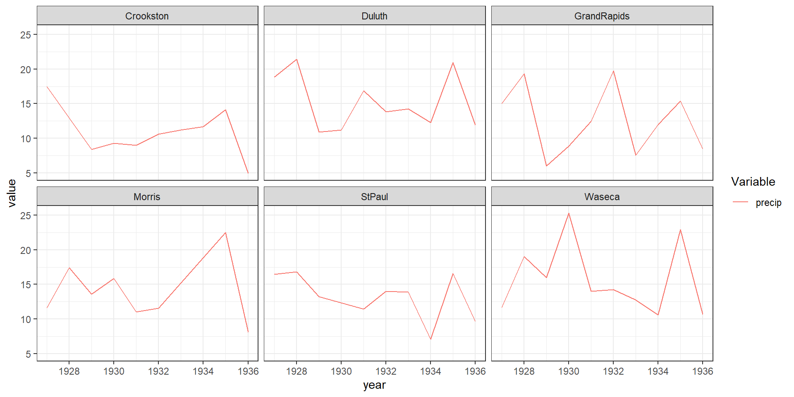

An Introduction to Using R for Horticultural Data Analysis
Brittany Barker
1/30/23
About me
Current position
- Research Associate, Oregon IPM Center & Dept. of Hort., OSU
Research interests
- Modeling, ecology, biogeography, conservation, biological invasions, and genetics
Hobbies
- Running, hiking, biking, moving!
- Gardening, native habitat restoration
- Artistic and creative endeavors


Presentation outline
- Introduction to R and RStudio
- Introduction to the Tidyverse
- Examples: data visualization and analysis
- Environmental influences on yield (Barley)
- Germination at different salt concentrations (Alfalfa)
- Inbreeding vs. plant height (Maize)
What is R?
- First implemented beginning in early 1990s (based on S language)
- First designed for statistics but can now do much more

Source: blog.internshala.com

Source: www.icertglobal.com
Limitations of R
- Steep learning curve, but
RStudiocan help overcome this limitation
- Hungry for physical memory: stores all data in physical memory
- Slower execution: may not be as fast as MATLAB and Python
Even after years of experience with R, I have days where I….
RStudio (now Posit)
- Re-branded as Posit (more Python friendly)
- Free and open source IDE (integrated development environment)
- Many convenient features and tools that make it easier to
- write and troubleshoot code
- interact with objects in the R environment
- access files
- simultaneously view graphs, data tables, code, and outputs
- write and troubleshoot code

Analogy of difference between R and RStudio

Source: moderndive.com
RStudio screenshot

Source: wikipedia.org
Presentation outline
- Introduction to R and RStudio
- Introduction to the Tidyverse *
Tidyverse
- Collection of R packages designed for data science
- Data analysis pipeline to clean, process, model, and visualize data
- Write simpler, more readable code

Source: education.RStudio.com
Essential packages: dplyr and tidyr
As a scientist, you spend a huge amount of time preparing, organizing, formatting, and cleaning data
dplyris for data cleaning and manipulationtidyris for converting between different data formats
The pipe operator %>%
- The Tidyverse pipe operator
%>%performs a sequences of actions
- Imagining the data stream as a flow of water in pipes

Source: static-bcrf.biochem.wisc.edu
The pipe operator %>%
- Stream of data can be modified by each successive function (piped)
- “Verbs” in
dplyrarearrange(),mutate(),select(),filter(), andsummarize()
Base R vs. Tidyverse step structure
Some fake data
Base R vs. Tidyverse step structure
Some fake data
Base R step structure
Operations result in an object (e.g., a data frame) being modified multiple times
Base R vs. Tidyverse step structure
Some fake data
Base R step structure
Operations result in an object (e.g., a data frame) being modified multiple times
Tidyverse step structure
Operations are done in a pipeline to a single object
ggplot2: another essential Tidyverse package
- Uses layered approach to create graphics (The Grammar of Graphics)
- You provide the data, tell
ggplot2how to map variables to aesthetics, what graphical elements to use, and it takes care of the details

Source: R for the rest of us
Base R plots vs. Tidyverse (ggplot2) plots
Plots made with base R functions
Source: sharpsightlabs.com
Base R plots vs. Tidyverse (ggplot2) plots
Plots made with ggplot2
Source: www.icertglobal.com
Presentation outline
- Introduction to R and RStudio
- Introduction to the Tidyverse
- Examples: data visualization and analysis
- Environmental influences on yield (Barley) *
R packages
These packages must be installed prior to running code for the examples
library(agridat) # Agricultural data
library(here) # Start in R project directory
library(dplyr) # Data wrangling
library(tidyr) # Data re-structuring
library(ggplot2) # Plotting model outputs
library(ggh4x) # For strip text in plots
library(ggsignif) # Showing significant differences between groups in plotsBarley: Environmental influences on yield
Multi-environment trial of barley in Minnesota at 6 sites from 1927-1936
- Available in the
agridatR package - Questions we’ll address:
- Which sites have the lowest and highest barley yields?
- How does the environment influence yield?
Barley: yield data
- Access datasets from
agridat - Give data a shorter name
Barley: yield data
- View the first several rows of data using
head()
Barley: yield data
- View the first several rows of data using
head()
yield gen year site
1 47.5 Manchuria 1927 StPaul
2 45.4 Glabron 1927 StPaul
3 45.0 Svansota 1927 StPaul
4 43.4 Velvet 1927 StPaul
5 60.2 Trebi 1927 StPaul
6 45.2 ManxSA 1927 StPaul- View the last several rows of data using
tail()
Barley: yield data
'data.frame': 647 obs. of 4 variables:
$ yield: num 47.5 45.4 45 43.4 60.2 45.2 50.3 49 45.9 49.4 ...
$ gen : Factor w/ 22 levels "Colsess","CompCross",..: 7 4 19 21 20 8 16 15 1 5 ...
$ year : int 1927 1927 1927 1927 1927 1927 1927 1927 1927 1927 ...
$ site : Factor w/ 6 levels "Crookston","Duluth",..: 5 5 5 5 5 5 5 5 5 5 ...- Display the data structure using
str()- Yield (bushels/acre) is numeric
- Genotype (variety) is factor
- Year is integer
- Site is factor
Mean barley yield across sites
- Calculate mean yield across the 6 sites
- Group data by site using
group_by()
- Group data by site using
Mean barley yield across sites
- Calculate mean yield across the 6 sites
- Group data by site using
group_by() - Use
summarize()to calculate mean
- Group data by site using
Mean barley yield across sites
- Show the results
Bar plot: mean yield across sites
- Visualize mean yield results using a bar plot
- Plot using the
ggplot()function - The
+operator adds layers - Aesthetics (x, y, etc.) defined with
aes()
- Use
geom_col()if there’s only 1 row of data per item
- Plot using the
Bar plot: mean yield across sites
This plot doesn’t look that great…
Add layers to improve the bar plot
# Make a prettier ggplot
plot_yield <- plot_yield +
scale_y_continuous(expand = c(0, 0), limits = c(0, 50)) + # Force y-axis to start at 0 and end at 50
theme_bw() + # Black and white theme
xlab("Site") + # x-axis label
ylab("Mean yield") + # y-axis label
theme(axis.text = element_text(size = 14), # Increase font sizes
axis.title = element_text(size = 18))- Force the y-axis to start at 0
Add layers to improve the bar plot
# Make a prettier ggplot
plot_yield <- plot_yield +
scale_y_continuous(expand = c(0, 0), limits = c(0, 50)) + # Force y-axis to start at 0 and end at 50
theme_bw() + # Black and white theme
xlab("Site") + # x-axis label
ylab("Mean yield") + # y-axis label
theme(axis.text = element_text(size = 14), # Increase font sizes
axis.title = element_text(size = 18))- Force the y-axis to start 0
- Use black and white theme
Add layers to improve the bar plot
# Make a prettier ggplot
plot_yield <- plot_yield +
scale_y_continuous(expand = c(0, 0), limits = c(0, 50)) + # Force y-axis to start at 0 and end at 50
theme_bw() + # Black and white theme
xlab("Site") + # x-axis label
ylab("Mean yield") + # y-axis label
theme(axis.text = element_text(size = 14), # Increase font sizes
axis.title = element_text(size = 18))- Force the y-axis to start 0
- Use black and white theme
- Add custom labels
Add layers to improve the bar plot
# Make a prettier ggplot
plot_yield <- plot_yield +
scale_y_continuous(expand = c(0, 0), limits = c(0, 50)) + # Force y-axis to start at 0 and end at 50
theme_bw() + # Black and white theme
xlab("Site") + # x-axis label
ylab("Mean yield") + # y-axis label
theme(axis.text = element_text(size = 14), # Increase font sizes
axis.title = element_text(size = 18))- Force the y-axis to start 0
- Use black and white theme
- Add custom labels
- Increase font sizes in axes and legend
Bar plot: mean yield across sites
This plot is better
Barley yield: environmental covariates
- Question 2: How does the environment influence yield?
- Access environmental (weather) dataset from
agridat - Sort by the
sitecolumn usingarrange()
Barley yield: environmental covariates
site year mo cdd hdd precip min max
1 Crookston 1927 1 0 1791 0.35 -2.0 16.3
2 Crookston 1927 2 0 1489 0.49 3.0 20.5
3 Crookston 1927 3 0 1061 0.35 23.5 37.9
4 Crookston 1927 4 0 627 2.09 33.8 52.7
5 Crookston 1927 5 0 453 4.40 40.8 59.7
6 Crookston 1927 6 73 128 4.83 51.1 75.2- View the first several rows using
head()- precip: precipitation
- max: max temp
- min: min temp
- cdd: cooling degree-days (unit of physiological time)
Environmental influences on barley yield
Four steps
- Calculate mean yield across sites and years
- Calculate total degree-day accumulation and precipitation across sites and years
- Join and reformat results of the two data sets (i.e., yield + environment)
- Plot yield vs. environmental covariates
Step 1: mean yield across sites and years
- Group yield data by site using
group_by() - Calculate mean yield using
summarize()
Step 1: mean yield across sites and years
# Average yield per site and year
mean_yield_sitesYrs <- dat_bar %>%
group_by(site, year) %>%
summarize(mean_yield = mean(yield))
# Notice we have summaries for sites AND years
head(mean_yield_sitesYrs)# A tibble: 6 x 3
# Groups: site [1]
site year mean_yield
<fct> <int> <dbl>
1 Crookston 1927 31.5
2 Crookston 1929 36.0
3 Crookston 1930 34.0
4 Crookston 1931 41.8
5 Crookston 1932 31.2
6 Crookston 1933 30.4- Peek at the results
Step 2: Summarize environmental data
- Calculate total degree-day accumulation and precipitation across sites and years
- Use
filter()to retain data only for summer months (Apr-Aug)
- Use
Step 2: Summarize environmental data
- Calculate total degree-day accumulation and precipitation across sites and years
- Use
filter()to retain data only for summer months (Apr-Aug) - Group data by site and year using
group_by()
- Use
Step 2: Summarize environmental data
- Calculate total degree-day accumulation and precipitation across sites and years
- Use
filter()to retain data only for summer months (Apr-Aug) - Group data by site and year using
group_by() - Sum degree-days and precip for each year using
summarize()andacross()
- Use
Step 2: Summarize environmental data
# A tibble: 6 x 4
# Groups: site [1]
site year cdd precip
<fct> <int> <int> <dbl>
1 Crookston 1927 210 17.5
2 Crookston 1928 300 13.9
3 Crookston 1929 417 8.39
4 Crookston 1930 530 9.31
5 Crookston 1931 519 9.03
6 Crookston 1932 574 10.6 - Peek at the results
Step 3: Join and reformat results
- Join summarized yield and environment datasets using
left_join()
Step 3: Join and reformat results
- Join summarized yield and environment datasets
left_join() - Re-format data to “long” format using
pivot_longer()
Step 3: Join and reformat results
# A tibble: 6 x 5
# Groups: site [1]
site year mean_yield Variable value
<fct> <int> <dbl> <chr> <dbl>
1 Crookston 1927 31.5 cdd 210
2 Crookston 1927 31.5 precip 17.5
3 Crookston 1929 36.0 cdd 417
4 Crookston 1929 36.0 precip 8.39
5 Crookston 1930 34.0 cdd 530
6 Crookston 1930 34.0 precip 9.31- Peek at the results
Step 4: Plot yield vs. environmental covariates
# Create a scatter plot with a regression line
plot_barVwea <- ggplot(data = all_data_sitesYrs, aes(x = value, y = mean_yield, color = Variable)) +
geom_point() +
geom_smooth(method='lm', se = FALSE) +
ggh4x::facet_nested_wrap(~site + Variable, nrow = 3, scales = "free_x") +
theme_bw() + # Black and white theme
xlab("Variable") + # x-axis label
ylab("Mean yield") + # y-axis label
theme(axis.text = element_text(size = 14), # Increase font sizes
axis.title = element_text(size = 18),
legend.text = element_text(size = 14),
legend.title = element_text(size = 14),
strip.text = element_text(size = 14))- Create a scatter plot using
geom_point()
Step 4: Plot yield vs. environmental covariates
# Create a scatter plot with a regression line
plot_barVwea <- ggplot(data = all_data_sitesYrs, aes(x = value, y = mean_yield, color = Variable)) +
geom_point() +
geom_smooth(method='lm', se = FALSE) +
ggh4x::facet_nested_wrap(~site + Variable, nrow = 3, scales = "free_x") +
theme_bw() + # Black and white theme
xlab("Variable") + # x-axis label
ylab("Mean yield") + # y-axis label
theme(axis.text = element_text(size = 14), # Increase font sizes
axis.title = element_text(size = 18),
legend.text = element_text(size = 14),
legend.title = element_text(size = 14),
strip.text = element_text(size = 14))- Create a scatter plot using
geom_point() - Add a linear regression line using
geom_smooth()withlmmethod
Step 4: Plot yield vs. environmental covariates
# Create a scatter plot with a regression line
plot_barVwea <- ggplot(data = all_data_sitesYrs, aes(x = value, y = mean_yield, color = Variable)) +
geom_point() +
geom_smooth(method='lm', se = FALSE) +
ggh4x::facet_nested_wrap(~site + Variable, nrow = 3, scales = "free_x") +
theme_bw() + # Black and white theme
xlab("Variable") + # x-axis label
ylab("Mean yield") + # y-axis label
theme(axis.text = element_text(size = 14), # Increase font sizes
axis.title = element_text(size = 18),
legend.text = element_text(size = 14),
legend.title = element_text(size = 14),
strip.text = element_text(size = 14))- Create a scatter plot using
geom_point() - Add a linear regression line using
geom_smooth()withlmmethod - Create plots for each site and covariate using
facet_nested_wrap()
Step 4: Plot yield vs. environmental covariates
# Create a scatter plot with a regression line
plot_barVwea <- ggplot(data = all_data_sitesYrs, aes(x = value, y = mean_yield, color = Variable)) +
geom_point() +
geom_smooth(method='lm', se = FALSE) +
ggh4x::facet_nested_wrap(~site + Variable, nrow = 3, scales = "free_x") +
theme_bw() + # Black and white theme
xlab("Variable") + # x-axis label
ylab("Mean yield") + # y-axis label
theme(axis.text = element_text(size = 14), # Increase font sizes
axis.title = element_text(size = 18),
legend.text = element_text(size = 16),
legend.title = element_text(size = 16),
strip.text = element_text(size = 14))- Create a scatter plot using
geom_point() - Add a linear regression line using
geom_smooth()withlmmethod - Create plots for each site and covariate using
facet_nested_wrap - Make plot prettier by adding more layers (custom labels, larger font sizes, etc.)
Step 4: Plot yield vs. environmental covariates
Barley yield is higher when conditions are colder (less degree-day accumulation) and wetter
Presentation outline
- Introduction to R and RStudio
- Introduction to the Tidyverse
- Examples: data visualization and analysis
- Environmental influences on yield (Barley)
- Germination at different salt concentrations (Alfalfa) *
Dataset 2: Germination of alfalfa seeds
Germination of alfalfa seeds at various salt concentrations
- Available in the
agridatR package
- Study goal (Carlson et al. 1983): select alfalfa cultivars with ability to grow in saline soils
Credit: Donald R. Miller
Prepare data for plotting
- Germination is expressed as a proportion of the no-salt control to account for differences in germination among the cultivars
germcolumn needs to be divided by 100 for response curves- Column format for salt concentration (
nacl) must be factor (category)
Box plots: germination vs. salt concentration
- How do germination rates vary with salt concentrations across all genotypes?
- Make box plot using
geom_boxplot()
plot_box_alf <- ggplot(dat_alf, aes(x = nacl_factor, y = germ, fill = nacl_factor)) +
geom_boxplot() +
theme_bw() +
xlab("Salt concentration (%)") + # x-axis label
ylab("Germination (%)") + # y-axis label
labs(fill = "Salt\nconcentration (%)") + # new legend title
theme(axis.text = element_text(size = 14), # Increase font sizes
axis.title = element_text(size = 18),
legend.text = element_text(size = 14),
legend.title = element_text(size = 14))Box plots: germination vs. salt concentration
Generalized linear model
- Build linear response between response (germination) and predictors (cultivar and salt concentration)
# Generalized linear model
# Main effects
glm_results <- glm(germ_frac ~ 0 + gen*nacl, data = dat_alf, family = quasibinomial)
summary(glm_results)
Call:
glm(formula = germ_frac ~ 0 + gen * nacl, family = quasibinomial,
data = dat_alf)
Deviance Residuals:
Min 1Q Median 3Q Max
-0.41818 -0.19346 -0.06143 0.05775 0.43591
Coefficients:
Estimate Std. Error t value Pr(>|t|)
genAnchor 7.15694 1.19305 5.999 4.08e-08 ***
genApollo 7.52259 1.27262 5.911 6.00e-08 ***
genBaker 7.68012 1.29505 5.930 5.51e-08 ***
genDrylander 7.97432 1.35899 5.868 7.25e-08 ***
genGrimm 9.66492 1.72812 5.593 2.38e-07 ***
genHoneoye 7.98542 1.36822 5.836 8.31e-08 ***
genIroquois 6.71105 1.12263 5.978 4.48e-08 ***
genLadak65 9.22412 1.64586 5.604 2.26e-07 ***
genOlympic 4.60446 0.75992 6.059 3.13e-08 ***
genRanger 6.02774 0.99197 6.077 2.90e-08 ***
genRiley 6.36407 1.04949 6.064 3.06e-08 ***
genThor 6.41849 1.05261 6.098 2.64e-08 ***
genUCSalton 7.87877 1.33419 5.905 6.15e-08 ***
genVangard 5.23146 0.85401 6.126 2.33e-08 ***
genVernal 11.36858 2.13701 5.320 7.53e-07 ***
nacl -4.95041 0.81887 -6.045 3.33e-08 ***
genApollo:nacl -0.81048 1.25707 -0.645 0.5207
genBaker:nacl -0.36767 1.20828 -0.304 0.7616
genDrylander:nacl -0.95124 1.28341 -0.741 0.4605
genGrimm:nacl -1.97420 1.47108 -1.342 0.1830
genHoneoye:nacl -1.11900 1.30777 -0.856 0.3945
genIroquois:nacl -0.46109 1.20128 -0.384 0.7020
genLadak65:nacl -2.02275 1.47292 -1.373 0.1731
genOlympic:nacl 1.01542 1.02351 0.992 0.3238
genRanger:nacl 0.10072 1.12541 0.089 0.9289
genRiley:nacl -0.04697 1.14552 -0.041 0.9674
genThor:nacl 0.19935 1.12010 0.178 0.8591
genUCSalton:nacl -0.59642 1.23766 -0.482 0.6311
genVangard:nacl 0.70773 1.05534 0.671 0.5042
genVernal:nacl -2.92774 1.67914 -1.744 0.0846 .
---
Signif. codes: 0 '***' 0.001 '**' 0.01 '*' 0.05 '.' 0.1 ' ' 1
(Dispersion parameter for quasibinomial family taken to be 0.05438014)
Null deviance: 100.4289 on 120 degrees of freedom
Residual deviance: 4.1973 on 90 degrees of freedom
AIC: NA
Number of Fisher Scoring iterations: 7Response curves for each genotype
# Response curve plot
plot_resp_alf <- ggplot(data = dat_alf, aes(x = nacl, y = germ_frac)) +
geom_point() + # make a scatter plot
geom_smooth(method = "glm", se = FALSE, method.args = list(family=quasibinomial(link="probit"))) +
facet_wrap(~gen, nrow = 5) +
xlab("Salt concentration (%)") + # label x-axis
ylab("Germination (%)") + # label y-axis
theme_bw() +
scale_x_continuous(breaks = c(0, 0.5, 0.75, 1, 1.25, 1.5, 1.75, 2)) +
theme(axis.text = element_text(size = 10), # Increase font sizes
axis.title = element_text(size = 14),
legend.text = element_text(size = 10),
legend.title = element_text(size = 10),
strip.text = element_text(size = 12))geom_pointcreates a scatter plot
Response curves for each genotype
# Response curve plot
plot_resp_alf <- ggplot(data = dat_alf, aes(x = nacl, y = germ_frac)) +
geom_point() + # make a scatter plot
geom_smooth(method = "glm", se = FALSE, method.args = list(family=quasibinomial(link="probit"))) +
facet_wrap(~gen, nrow = 5) +
xlab("Salt concentration (%)") + # label x-axis
ylab("Germination (%)") + # label y-axis
theme_bw() +
scale_x_continuous(breaks = c(0, 0.5, 0.75, 1, 1.25, 1.5, 1.75, 2)) +
theme(axis.text = element_text(size = 10), # Increase font sizes
axis.title = element_text(size = 14),
legend.text = element_text(size = 10),
legend.title = element_text(size = 10),
strip.text = element_text(size = 12))geom_pointcreates a scatter plotgeom_smoothadds a fitted line using theglm()method
Response curves for each genotype
# Response curve plot
plot_resp_alf <- ggplot(data = dat_alf, aes(x = nacl, y = germ_frac)) +
geom_point() + # make a scatter plot
geom_smooth(method = "glm", se = FALSE, method.args = list(family=quasibinomial(link="probit"))) +
facet_wrap(~gen, nrow = 5) +
xlab("Salt concentration (%)") + # label x-axis
ylab("Germination (%)") + # label y-axis
theme_bw() +
scale_x_continuous(breaks = c(0, 0.5, 0.75, 1, 1.25, 1.5, 1.75, 2)) +
theme(axis.text = element_text(size = 10), # Increase font sizes
axis.title = element_text(size = 14),
legend.text = element_text(size = 10),
legend.title = element_text(size = 10),
strip.text = element_text(size = 12))geom_pointcreates a scatter plotgeom_smoothadds a fitted line using theglm()method- Plot results for each cultivar separately using
facet_wrap()
Response curves for each genotype
# Response curve plot
plot_resp_alf <- ggplot(data = dat_alf, aes(x = nacl, y = germ_frac)) +
geom_point() + # make a scatter plot
geom_smooth(method = "glm", se = FALSE, method.args = list(family=quasibinomial(link="probit"))) +
facet_wrap(~gen, nrow = 5) +
xlab("Salt concentration (%)") + # label x-axis
ylab("Fraction germinated") + # label y-axis
theme_bw() +
scale_x_continuous(breaks = c(0, 0.5, 0.75, 1, 1.25, 1.5, 1.75, 2)) +
theme(axis.text = element_text(size = 10), # Increase font sizes
axis.title = element_text(size = 14),
legend.text = element_text(size = 10),
legend.title = element_text(size = 10),
strip.text = element_text(size = 12))geom_pointcreates a scatter plotgeom_smoothadds a fitted line using theglm()method- Plot results for each cultivar separately using
facet_wrap() - Make plot prettier by adding custom labels, custom axis breaks, etc.
Response curves for each genotype
High (Vernal cultivar) vs. low (Olympic, Vangard) salt tolerance
Presentation outline
- Introduction to R and RStudio
- Introduction to the Tidyverse
- Examples: data visualization and analysis
- Environmental influences on yield (Barley)
- Germination at different salt concentrations (Alfalfa)
- Inbreeding vs. plant height (Maize) *
Dataset 3: Inbreeding and plant heights
- Darwin experimented on corn seeds of self-fertilized and cross-fertilized corn plants
- He hypothesized that cross-bred plants would be superior (taller) to self-fertilized plants
- R.A. Fisher analyzed Darwin’s data with t-tests
- Data available in the
agridatR package
One sided t-test: maize plant heights
- Re-format data to “wide” format using
pivot_wider()
One sided t-test: maize plant heights
- Re-format data to “wide” format
- Create a column of differences in plant height (cross - self)
One sample t-test: maize plant heights
- Conduct a one-sample t-test using
t.test()
# One sample t-test
# Test if population mean is different from 0
# H0: no difference
t.test(dat_corn2$diff, mu = 0)
One Sample t-test
data: dat_corn2$diff
t = 2.148, df = 14, p-value = 0.0497
alternative hypothesis: true mean is not equal to 0
95 percent confidence interval:
0.003899165 5.229434169
sample estimates:
mean of x
2.616667 Box plots and t-test: maize plant heights
ggsignif()can show whether groups are significantly different
- We specify “greater” in the
altnerativeargument to test the hypothesis that crossed plants are taller
# Create a box plot showing t-test results
plot_corn <- ggplot(dat_corn, aes(x = type, y = height, fill = type)) +
geom_boxplot() + # box plot
ggsignif::geom_signif(comparisons = list(c("cross", "self")),
map_signif_level = TRUE, # add significance values
alternative = "greater", #H: Crossed plants higher
textsize = 12) + # Asterisk size
theme_bw() +
xlab("Type of fertilization") + # x-axis label
ylab("Height") + # y-axis label
labs(fill = "Type of\nfertilization") + # new legend title
theme(axis.text = element_text(size = 16), # Increase font sizes
axis.title = element_text(size = 18),
legend.text = element_text(size = 16),
legend.title = element_text(size = 16))Box plots and t-test: maize plant heights
Make plot prettier and voila
# Create a box plot showing t-test results
plot_corn <- ggplot(dat_corn, aes(x = type, y = height, fill = type)) +
geom_boxplot() + # box plot
ggsignif::geom_signif(comparisons = list(c("cross", "self")),
map_signif_level = TRUE, # add significance values
alternative = "greater", #H: Crossed plants higher
textsize = 6) + # Asterisk size
theme_bw() +
xlab("Type of fertilization") + # x-axis label
ylab("Height") + # y-axis label
labs(fill = "Type of\nfertilization") + # new legend title
theme(axis.text = element_text(size = 16), # Increase font sizes
axis.title = element_text(size = 18),
legend.text = element_text(size = 16),
legend.title = element_text(size = 16))Summary
- R and RStudio (Posit) are great tools for analyzing and visualizing data
- RStudio makes it a LOT easier to learn and use R, e.g.,
- run code line by line if needed
- troubleshoot issues
- visualize plots before saving
- looking at data (similar to looking at an Excel spreadsheet)
Source: moderndive.com
Summary
- There’s many ways to do things in R, but I prefer the Tidyverse approach
- more readable code
- offers order and consistency
- functions to support entire end-to-end workflow
- beautiful graphics

Closing statements
- Don’t be afraid to learn R!
- I’ve used R for ~12 years and I’m still learning new skills
I learned a new skill doing this presentation!
revealjsis an open source HTML presentation framework
- User guide: https://Posit.org/docs/presentations/revealjs/
This presentation in RStudio
Closing statements
- It’s normal to want to rip your hair out sometimes
- Connect with your local R community
- Tons of freely available online books and tutorials
- I can send you a list of resources that I compiled if you reach out
Thank you!
- E-mail:
brittany.barker@oregonstate.edu - Website: brittanysbarker.org
- This presentation (includes code) is available at https://github.com/bbarker505/ASHS_R_presentation_2023/
Some potentially helpful starting points
- R Cookbook: https://rc2e.com
- Modern R with the tidyverse: http://modern-rstats.eu
- Statistical Inference via Data Science: A ModernDive into R and the tidyverse: https://moderndive.com/index.html
- R for Data Science: https://r4ds.had.co.nz
- R Manuals::An Introduction to R: https://RStudio.github.io/r-manuals
Time series: Mean yield across sites + years
Step 2: Create a time series plot using ggplot2
- Line plot created using
geom_line()
facet_wrapcombines multiple plots (by site)
# Create a plot that shows time series at each site
ggplot(mean_yield_sitesYrs, aes(x = year, y = mean_yield)) +
geom_line() +
theme_bw() +
facet_wrap(~site) + # Produce a plot for each site
xlab("Year") + # x-axis label
ylab("Mean yield") + # y-axis label
theme(axis.text = element_text(size = 14), # Increase font sizes
axis.title = element_text(size = 18),
legend.text = element_text(size = 14),
legend.title = element_text(size = 14))Environment plus yield across sites + years
Create a plot showing time series of precipitation and mean yield
Time series plot for all sites
# Subset data (only need mean yield and precip data)
all_data_sitesYrs2 <- filter(all_data_sitesYrs, Variable %in% c("mean_yield", "precip"))
# Create a time series plot for all sites
plot_wea <- ggplot(all_data_sitesYrs2, aes(x = year, y = value, color = Variable)) +
geom_line() +
theme_bw() + # Black and white plot theme
facet_wrap(~site)
Time series: Mean yield across sites + years
# Create a plot that shows time series at each site
ggplot(mean_yield_sitesYrs, aes(x = year, y = mean_yield)) +
geom_line() +
theme_bw() +
facet_wrap(~site) +
xlab("Year") + # x-axis label
ylab("Mean yield") + # y-axis label
theme(axis.text = element_text(size = 14), # Increase font sizes
axis.title = element_text(size = 18),
legend.text = element_text(size = 14),
legend.title = element_text(size = 14),
strip.text = element_text(size = 14))